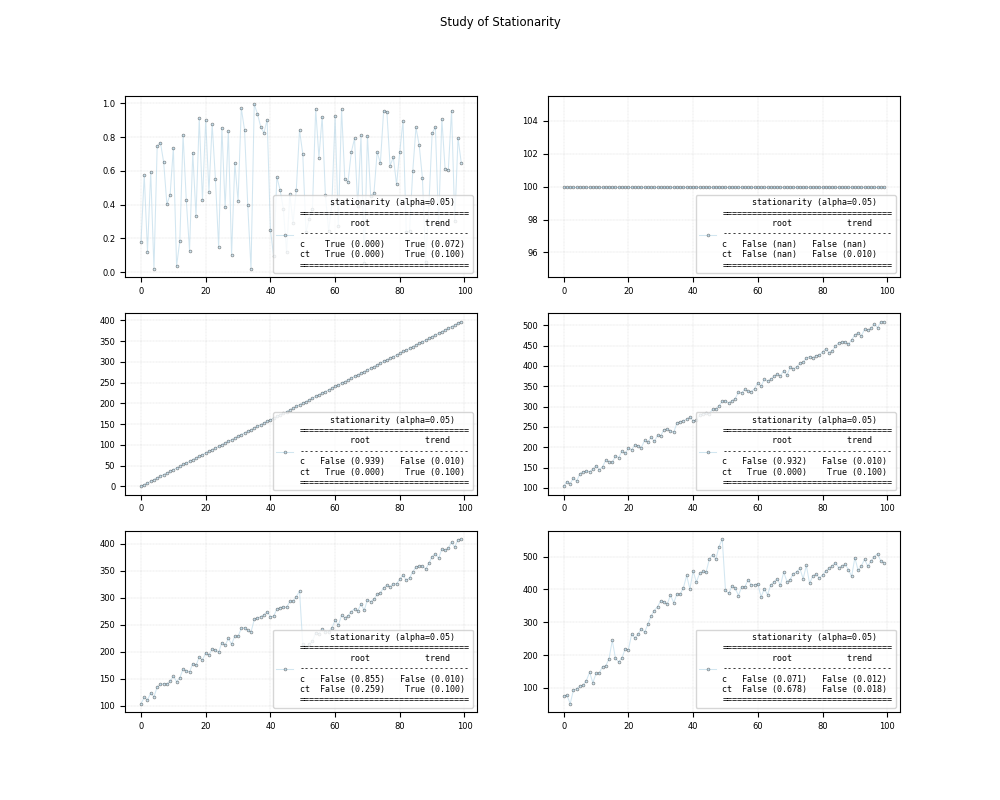

Note
Click here to download the full example code
Statistical test - Stationarity
Example using your package
Out:
c:\users\kelda\desktop\repositories\virtualenvs\test-pyamr\lib\site-packages\statsmodels\tsa\stattools.py:2019: InterpolationWarning:
The test statistic is outside of the range of p-values available in the
look-up table. The actual p-value is smaller than the p-value returned.
c:\users\kelda\desktop\repositories\virtualenvs\test-pyamr\lib\site-packages\statsmodels\tsa\stattools.py:2190: InterpolationWarning:
The test statistic is outside of the range of p-values available in the
look-up table. The actual p-value is smaller than the p-value returned.
(4.9, 0.95, {'10%': 1.2888, '5%': 1.1412, '2.5%': 1.0243, '1%': 0.907})
Series:
stationarity-adf_ct_statistic -2.5585
stationarity-adf_ct_pvalue 0.2994
stationarity-adf_ct_nlags 0
stationarity-adf_ct_nobs 99
stationarity-adf_ct_criticalvalue_1% -4.0533
stationarity-adf_ct_criticalvalue_5% -3.4558
stationarity-adf_ct_criticalvalue_10% -3.1536
stationarity-adf_c_statistic -0.9008
stationarity-adf_c_pvalue 0.7877
stationarity-adf_c_nlags 0
stationarity-adf_c_nobs 99
stationarity-adf_c_criticalvalue_1% -3.4982
stationarity-adf_c_criticalvalue_5% -2.8912
stationarity-adf_c_criticalvalue_10% -2.5826
stationarity-kpss_ct_statistic 0.1673
stationarity-kpss_ct_pvalue 0.0322
stationarity-kpss_ct_nlags 5
stationarity-kpss_ct_criticalvalue_10% 0.119
stationarity-kpss_ct_criticalvalue_5% 0.146
stationarity-kpss_ct_criticalvalue_2.5% 0.176
stationarity-kpss_ct_criticalvalue_1% 0.216
stationarity-kpss_c_statistic 1.5741
stationarity-kpss_c_pvalue 0.01
stationarity-kpss_c_nlags 5
stationarity-kpss_c_criticalvalue_10% 0.347
stationarity-kpss_c_criticalvalue_5% 0.463
stationarity-kpss_c_criticalvalue_2.5% 0.574
stationarity-kpss_c_criticalvalue_1% 0.739
stationarity-root_ct_stationary False
stationarity-root_c_stationary False
stationarity-trend_ct_stationary False
stationarity-trend_c_stationary False
stationarity-rur_statistic 4.9
stationarity-rur_pvalue 0.95
stationarity-rur_criticalvalue_10% 1.2888
stationarity-rur_criticalvalue_5% 1.1412
stationarity-rur_criticalvalue_2.5% 1.0243
stationarity-rur_criticalvalue_1% 0.907
stationarity-model {'x': [106...
stationarity-id Stationarity
dtype: object
Identifier:
Stationarity
c:\users\kelda\desktop\repositories\virtualenvs\test-pyamr\lib\site-packages\statsmodels\tsa\stattools.py:2023: InterpolationWarning:
The test statistic is outside of the range of p-values available in the
look-up table. The actual p-value is greater than the p-value returned.
c:\users\kelda\desktop\repositories\virtualenvs\test-pyamr\lib\site-packages\statsmodels\tsa\stattools.py:2023: InterpolationWarning:
The test statistic is outside of the range of p-values available in the
look-up table. The actual p-value is greater than the p-value returned.
(1.4, 0.9, {'10%': 1.2888, '5%': 1.1412, '2.5%': 1.0243, '1%': 0.907})
c:\users\kelda\desktop\repositories\virtualenvs\test-pyamr\lib\site-packages\statsmodels\tsa\stattools.py:2023: InterpolationWarning:
The test statistic is outside of the range of p-values available in the
look-up table. The actual p-value is greater than the p-value returned.
c:\users\kelda\desktop\repositories\virtualenvs\test-pyamr\lib\site-packages\statsmodels\tsa\stattools.py:2019: InterpolationWarning:
The test statistic is outside of the range of p-values available in the
look-up table. The actual p-value is smaller than the p-value returned.
c:\users\kelda\desktop\repositories\virtualenvs\test-pyamr\lib\site-packages\statsmodels\tsa\stattools.py:2190: InterpolationWarning:
The test statistic is outside of the range of p-values available in the
look-up table. The actual p-value is smaller than the p-value returned.
(9.9, 0.95, {'10%': 1.2888, '5%': 1.1412, '2.5%': 1.0243, '1%': 0.907})
c:\users\kelda\desktop\repositories\virtualenvs\test-pyamr\lib\site-packages\statsmodels\tsa\stattools.py:2023: InterpolationWarning:
The test statistic is outside of the range of p-values available in the
look-up table. The actual p-value is greater than the p-value returned.
c:\users\kelda\desktop\repositories\virtualenvs\test-pyamr\lib\site-packages\statsmodels\tsa\stattools.py:2019: InterpolationWarning:
The test statistic is outside of the range of p-values available in the
look-up table. The actual p-value is smaller than the p-value returned.
c:\users\kelda\desktop\repositories\virtualenvs\test-pyamr\lib\site-packages\statsmodels\tsa\stattools.py:2190: InterpolationWarning:
The test statistic is outside of the range of p-values available in the
look-up table. The actual p-value is smaller than the p-value returned.
(6.3, 0.95, {'10%': 1.2888, '5%': 1.1412, '2.5%': 1.0243, '1%': 0.907})
c:\users\kelda\desktop\repositories\virtualenvs\test-pyamr\lib\site-packages\statsmodels\tsa\stattools.py:2019: InterpolationWarning:
The test statistic is outside of the range of p-values available in the
look-up table. The actual p-value is smaller than the p-value returned.
c:\users\kelda\desktop\repositories\virtualenvs\test-pyamr\lib\site-packages\statsmodels\tsa\stattools.py:2190: InterpolationWarning:
The test statistic is outside of the range of p-values available in the
look-up table. The actual p-value is smaller than the p-value returned.
(4.9, 0.95, {'10%': 1.2888, '5%': 1.1412, '2.5%': 1.0243, '1%': 0.907})
c:\users\kelda\desktop\repositories\virtualenvs\test-pyamr\lib\site-packages\statsmodels\tsa\stattools.py:2019: InterpolationWarning:
The test statistic is outside of the range of p-values available in the
look-up table. The actual p-value is smaller than the p-value returned.
c:\users\kelda\desktop\repositories\virtualenvs\test-pyamr\lib\site-packages\statsmodels\tsa\stattools.py:2019: InterpolationWarning:
The test statistic is outside of the range of p-values available in the
look-up table. The actual p-value is smaller than the p-value returned.
c:\users\kelda\desktop\repositories\virtualenvs\test-pyamr\lib\site-packages\statsmodels\tsa\stattools.py:2190: InterpolationWarning:
The test statistic is outside of the range of p-values available in the
look-up table. The actual p-value is smaller than the p-value returned.
(3.1, 0.95, {'10%': 1.2888, '5%': 1.1412, '2.5%': 1.0243, '1%': 0.907})
7 # Libraries
8 import numpy as np
9 import pandas as pd
10 import matplotlib as mpl
11 import matplotlib.pyplot as plt
12
13 # Import pyAMR
14 from pyamr.datasets.load import make_timeseries
15 from pyamr.core.stats.stationarity import StationarityWrapper
16
17 # ----------------------------
18 # set basic configuration
19 # ----------------------------
20 # Set pandas configuration.
21 pd.set_option('display.max_colwidth', 14)
22 pd.set_option('display.width', 150)
23 pd.set_option('display.precision', 4)
24
25 # Set default parameters.
26 mpl.rc('lines', linewidth=0.35)
27 mpl.rc('xtick', labelsize=6)
28 mpl.rc('ytick', labelsize=6)
29 mpl.rc('legend', fontsize=6)
30 mpl.rc('grid')
31 mpl.rc('figure')
32 mpl.rc('axes')
33 mpl.rc('font', size=7)
34
35 # Font type.
36 font = {
37 'family': 'monospace',
38 'weight': 'normal',
39 'size': 6,
40 }
41
42 # ----------------------------
43 # create data
44 # ----------------------------
45 # Constants
46 length = 100
47 offset = 100
48 slope = 4
49
50 # Create variables.
51 x = np.arange(length)
52 n = np.random.rand(length)
53
54 # Create timeseries.
55 y_n = n
56 y_c = np.ones(length)*offset
57 y_t = x*slope+n
58 y_ct = x*slope+offset+n*20
59 y_r = np.concatenate((y_ct[:50], y_ct[50:]-offset))
60 x_s, y_s, f_s = make_timeseries()
61
62 # ----------------------------
63 # Example of stationarity
64 # ----------------------------
65 # Single example
66 stationarity = StationarityWrapper()\
67 .fit(y_r, adf_kwargs={}, kpss_kwargs={})
68
69 # Show
70 print("\nSeries:")
71 print(stationarity.as_series())
72
73 print("\nIdentifier:")
74 print(stationarity._identifier())
75
76
77 # ---------------------------
78 # Plot
79 # ---------------------------
80 # .. note:: Including in the timeseries variable the value
81 # y_c produces the following error:
82 # ValueError: cannot convert float NaN to integer.
83
84 # Create array of time series
85 timeseries = [y_n, y_c, y_t, y_ct, y_r, y_s]
86 timeseries = [y_n, y_t, y_ct, y_r, y_s]
87
88 # Create figure
89 fig, axes = plt.subplots(3,2, figsize=(10,8))
90 axes = axes.flatten()
91
92 # Loop
93 for i,ts in enumerate(timeseries):
94 #print("Stationarity... %s" % i)
95
96 # Create stationarity wrapper.
97 stationarity = StationarityWrapper().fit(x=ts)
98
99 # Plot
100 axes[i].plot(ts, color='#A6CEE3', alpha=0.5, marker='o',
101 markeredgecolor='k', markeredgewidth=0.5,
102 markersize=2, linewidth=0.75,
103 label=stationarity.as_summary())
104
105 # Set grid
106 axes[i].grid(color='gray', linestyle='--',
107 linewidth=0.2, alpha=0.5)
108
109 # Set legend
110 axes[i].legend(prop=font, loc=4)
111
112 # Study of Stationarity
113 plt.suptitle("Study of Stationarity")
114 plt.tight_layout()
115
116 # Show
117 plt.show()
Total running time of the script: ( 0 minutes 1.117 seconds)